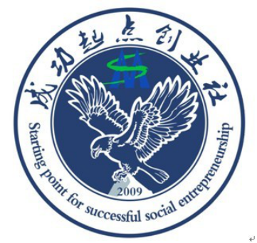

1.1 部门介绍
成功起点创业社自2009年6月份成立以来，秉承着矿大人“学而优则用，学而优则创”的精神，践行着管理学院社团中心“服务源自真诚”的理念，为广大同学提供一个了解创业、走近创业、体验创业的创业教育平台。
立足于管理学院注重管理实践的特殊性质，成功起点创业社注重交流创业想法、学习创业经验、参观创业园区，从理论到实践，从了解到体验。同时，学生在创业文化月、创业挑战大赛之“娃哈哈”杯营销大赛等活动亲身体验创业的心酸与快乐，付出与收获。成功起点创业社以营造大学生创业氛围为目标；以服务有志于创业的大学生为己任；以培养大学生创新精神和创新思维为工作重点的宗旨；培养学生创新意识，激发创意思维；提高创造能力，拓宽创业途经。努力培养更多的大学生，使其成为具有“创新、创意、创业”素质的三创人才。
成立5年，成功起点创业社现由五大部门组成：组织部、策划部、宣传部和外联部、常务部。成功起点创业社求真务实，一直致力于提高干事素质与能力。针对在校大学生所欠缺的能力，社团让成员从各类活动中激发他们的潜能，从各类必备的培训中增长知识与技能，为成员打造一个全新的锻炼自我的平台，为日后的学习、发展奠定良好的基础。同时社团有挑战新目标、追求更强自我的强烈愿望。展望未来，成功起点创业社将本着创新与学习的目标，推广创业新意识，力争成为学生中最受欢迎的社团。
1.2 社团标志
图表1：社团社标

成功起点创业社的社标构成要素主要有社团名称、管理学院院标、社团成立时间以及社团象征物。整个社标的寓意是：自从2009年成立以来，成功人就像一只雄鹰一样。虽然只是站在成功的起点，但是，他们渴望成功，相信终会有一天，在管理学院的培育下，他们可以向雄鹰一样，凭着自己的翅膀，展翅翱翔，直上云霄，梦圆成功起点创业社！
1.3 社团组织机构及主要负责人
图表2：组织结构及负责人
部门 名称 |
负责人 |
职务 |
班级 |
部门 名称 |
负责人 |
职务 |
班级 |
|
卢杰 |
部长 |
金融12-1班 |
外联部 |
何少华 |
副部 |
人力13-1班 |
策划部 |
蔡莎莎 |
副部 |
电商13-2班 |
常务部 |
胡逸群 |
副部 |
工商13-1班 |
组织部 |
曹雪婷 |
副部 |
人力13-1班 |
宣传部 |
吴程刚 |
副部 |
营销13-1班 |
成功起点创业社是一个实践性团体，它是广大创业爱好者“世纪澎湃，与时 拓进”的创业新天地。社团以灵活多样的活动，激发大家的创造性思维，提高大家的开拓能力，通过接触社会，锻炼大家的综合素质，包括：创业能力，语言表达能力，人际交往能力，社会实践能力等，以便为大学生未来的创业道路打下坚实的基础。成功起点创业社本着“开拓创新，与时俱进”的宗旨，并以培养大学生创新、创意、创业意识，丰富校园文化为指导思想，立足校园，面向社会，为矿大广大同学提供一个了解创业、走进创业、体验创业的创业教育的平台。
1.4 社歌简介
《我相信》
这是一群站在成功起点的成功人，他们怀揣梦想，激情洒脱！他们豪情满怀，壮志凌云！他们心潮澎湃，热情奔放！
这是一群不怕吃苦的成功人，他们坚持！他们奋斗！他们拼搏！他们努力！
这是一群勇往直前的成功人，他们自信、乐观！他们的未来充满希望！
故，只有这首《我相信》才能诠释成功人的自信与梦想，也只有他才能激励我们成功人勇往直前，努力拼搏！开拓创新，与时俱进！